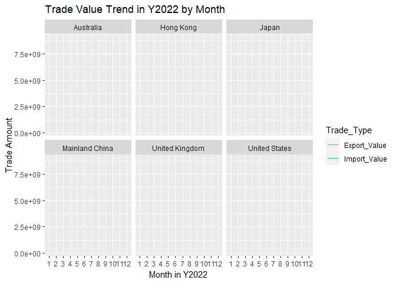
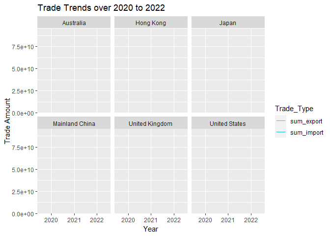
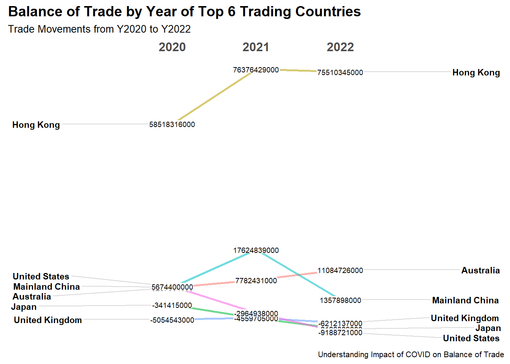
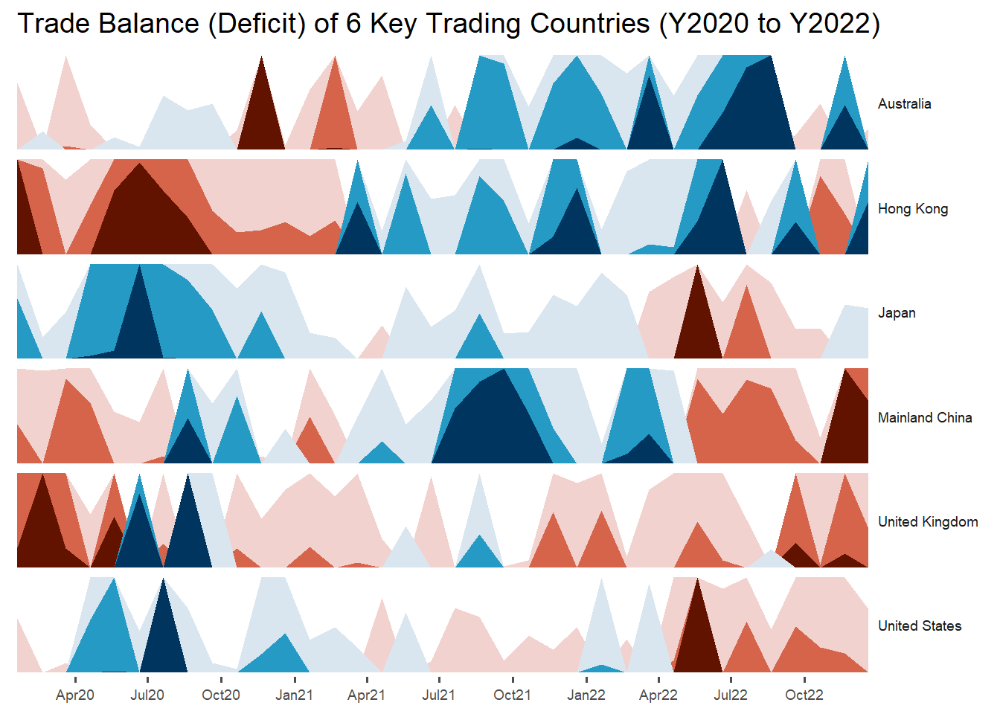
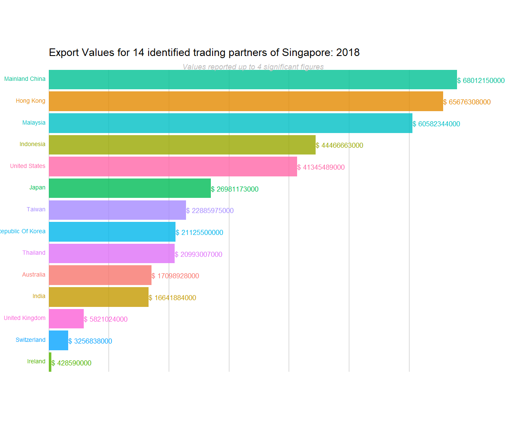
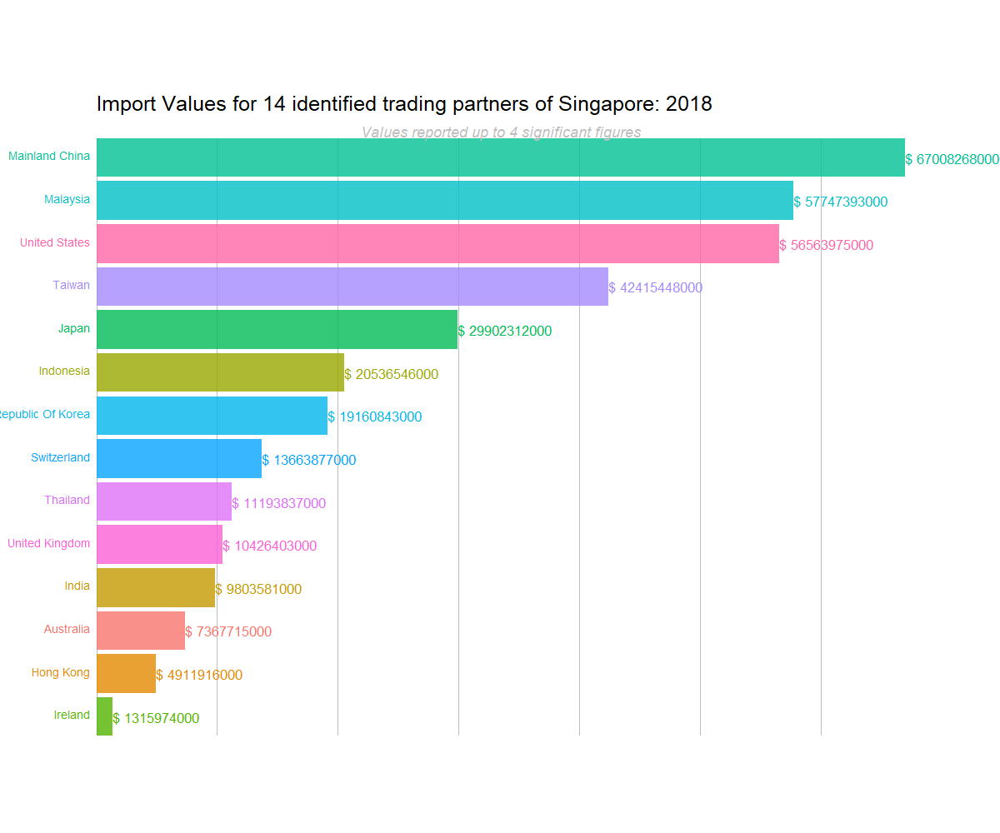

pacman::p_load(tidyverse, gganimate, patchwork, gapminder, readxl, gifski, png, transformr, CGPfunctions, ggthemes, ggHoriPlot, lubridate) Take Home Exercise 04
Using visualization techniques learnt in Lesson 6: It’s About Time, appropriate interactive techniques to enhance user experience and data discovery experiences.
The focus will be on import and export data for the period of Y2022 to Y2022 and the intention of the visualizations is to make salient any patterns and impact to bilateral trade balance, imports and exports to Singapore post-COVID.
imports_raw <- read_excel("MerchandiseTrade.xlsx", sheet = "T1")
exports_raw <- read_excel("MerchandiseTrade.xlsx", sheet = "T2")Data Cleaning
Step 1. Drop rows which contain irrelevant data from the raw imported data source in separated raw tables since imports and exports are from 2 tabs in the excel file.
imports <- imports_raw[-c(1:8, 129:151),]
exports <- exports_raw[-c(1:8, 101:123),]Step 2. Perform initial data cleaning by reshaping the data and renaming variables for both imports and exports table.
imports1 <- as.data.frame(t(imports)) #Transpose rows and columns
names(imports1) <- imports1[1,] # Rename Title Rows with row 1 values
imports1 <- imports1[-1,] #Drop the unneccesary row
names(imports1)[1] ="DateYear" # Rename Year Month Column
imports2 <- imports1[, -2] # Drop Unneccessary columns
#Repeat the same steps above for the exports table
exports1 <- as.data.frame(t(exports))
names(exports1) <- exports1[1,]
exports1 <- exports1[-1,]
names(exports1)[1] ="DateYear"
exports2 <- exports1[, -2]Step 3. Tidy both the Imports and Exports tables using pivot_longer to reshape data.
#Pivot longer for the imports table
imports3 <- imports2 %>%
pivot_longer(
cols = !DateYear,
names_to = "Country",
values_to = "Import_Value"
)
#Multiply Trade Value column by Thousands to get actual value
imports3$Import_Value<- 1000*as.numeric(imports3$Import_Value)
#Separate columns
imports_tidy <- imports3 %>% separate(DateYear, c('Year', 'Month'))
imports_tidy[c('Country', 'X')] <- str_split_fixed(imports_tidy$Country, " \\(", 2)
# Drop column X
imports_tidy <- imports_tidy[, -5]#Pivot longer for the exports table
exports3 <- exports2 %>%
pivot_longer(
cols = !DateYear,
names_to = "Country",
values_to = "Export_Value"
)
#Multiply Trade Value column by Thousands to get actual value
exports3$Export_Value<- 1000*as.numeric(exports3$Export_Value)
#Separate columns
exports_tidy <- exports3 %>% separate(DateYear, c('Year', 'Month'))
exports_tidy[c('Country', 'X')] <- str_split_fixed(exports_tidy$Country, " \\(", 2)
# Drop column X
exports_tidy <- exports_tidy[, -5] Step 4. Join both the Exports and Imports tidied tables into 1 overall table called ‘trade’
trade = merge(x=imports_tidy,y=exports_tidy,by=c("Country", "Year", "Month"),all=TRUE)
#Creating new column Balance of Trade (BOT)
trade$BOT <- trade$Export_Value - trade$Import_ValueUnveiling Salient Trade Patterns
The important countries of interest to be studied are first identified. The basis of selection is taken from the Department of Singstats’s infographic information provided on the major international trade partners that Singapore has.
The top 6 countries are: United States, Japan, Mainland China, Australia, Hong Kong, United Kingdom
What are the bilateral trade patterns of Singapore’s Top 6 trading partner countries in Y2022?
To visualize last year’s bilateral trade trend for last year, we first visualize using a moving line plot. This will attempt to reveal the current month-by-month changes in exports made and imports from the respective countries.
Step 1. Extract target countries into a new table and group accordingly to the trade-type (export and import).
top_6 <- subset(trade, Year == '2022' & Country %in% c('United States', 'Japan', 'Mainland China', 'Australia','Hong Kong', 'United Kingdom'))
# Convert the month name to numbers
top_6[["Month"]] <- match(top_6[["Month"]], month.abb)
# Pivot longer for Import and Export Values
top_6 <- top_6 %>%
pivot_longer(
cols = Import_Value:Export_Value,
names_to = "Trade_Type",
values_to = "Trade_Value"
)Step 2. Plot moving line plots using gganimate:
top6_ggplot <- ggplot(top_6, (aes(x = Month, y = Trade_Value, group = Trade_Type, color = Trade_Type))) +
geom_line(alpha = 2, show.legend = TRUE) +
scale_size(range = c(3,12)) +
scale_x_discrete(limits = c("1", "2", "3", "4", "5", "6", "7", "8", "9", "10", "11", "12")) +
transition_reveal(Month) +
facet_wrap(~Country) +
labs(title = "Trade Value Trend in Y2022 by Month", x = 'Month in Y2022', y = 'Trade Amount')
animate(top6_ggplot, renderer = gifski_renderer())
Findings:
From the visualization, it is observed that Mainland China had one of the highest trade volumes in both exports and imports as compared to the other countries. As such , contrary to Y2020, where United States was at the front leader, China has overtaken as Singapore’s No. 1 trading partner in volume now.
Hong Kong has a noticeable larger trade surplus as compared to the other countries which suggests that demand for SG goods is very high in Hong Kong.
With the 2 greater players China and United States, Trade surplus is also not consistent throughout the year and appears to be in deficit for a great part of Y2022.
Observing Import & Export Values over the years for Top 6 countries
To display an overall pattern on a year by year basis, we plot another moving line diagram to illustrate the trend of imports and export values for the 6 trading countries.
Step 1. Create a new table covering data from the years 2020 to 2022 with summed (by year) values for Imports and Exports.
#New table with just import and export values only
data3 <- trade[, -6]
sum_trade <- data3 %>%
group_by(Country, Year) %>%
summarize(sum_import = sum(Import_Value), sum_export = sum(Export_Value))Step 2. Define the desired datatable for study and plot the moving line plot using gganimate
top_6_years <- subset(sum_trade, Year %in% c('2020', '2021','2022') & Country %in% c('United States', 'Japan', 'Mainland China', 'Australia','Hong Kong', 'United Kingdom'))
# Convert Year to numeric
top_6_years$Year <- as.numeric(top_6_years$Year)
# Pivot longer for Import and Export Values
top_6_years <- top_6_years %>%
pivot_longer(
cols = sum_import: sum_export,
names_to = "Trade_Type",
values_to = "Trade_Value"
)top6_yr <- ggplot(top_6_years, (aes(x = Year, y = Trade_Value, group = Trade_Type, color = Trade_Type))) +
geom_line(alpha = 2, show.legend = TRUE) +
scale_size(range = c(3,12)) +
scale_x_discrete(limits = c(2020, 2021, 2022)) +
transition_reveal(Year) +
facet_wrap(~Country) +
labs(title = "Trade Trends over 2020 to 2022", y = 'Trade Amount')
animate(top6_yr, renderer = gifski_renderer())
Observing year period (Y2020 to Y2022) trends of Balance of Trade for key trade partners
To visualize this trend, we plot the slope graph to uncover the magnitudes of trade surplus and trade deficit that Singapore experienced over the years with the 6 major trading partners.
Step 1. Create a new table for the sum of Balance of Trade
data2 <- trade[, -c(4,5)]
data2[["Month"]] <- match(data2[["Month"]], month.abb)
sum_BOT <- data2 %>%
group_by(Country, Year) %>%
summarize(sum_BOT = sum(BOT))Step 2. Plot the slope graph using the function newggslopegraph for the period of Y2020 to Y2021 to display the summed up balance of trade on the year level.
sum_BOT %>%
mutate(Year = factor(Year)) %>%
filter(Year %in% c('2020', '2021', '2022')) %>%
filter(Country %in% c('United States', 'Japan', 'Hong Kong', 'Australia', 'United Kingdom', 'Mainland China'))%>%
newggslopegraph(Year, sum_BOT, Country,
Title = "Balance of Trade by Year of Top 6 Trading Countries",
SubTitle = "Trade Movements from Y2020 to Y2022",
Caption = "Understanding Impact of COVID on Balance of Trade")
Findings:
Hong Kong has the greatest trade surplus consistently in Y2020 to 2022 as compared to the other 5 major players. As the value appears to be increasing, from Y2020 to Y2021 and sustained thereafter, it suggests that some export recovery to Hong Kong has been attained post-COVID.
For countries Japan, United Kingdom and United States however, exports in Y2021 and Y2022 are much lower compared to Y2020 which suggest no export recovery yet. Alternatively, this is also because of increase of imports relative to Y2020 which was the case for both United States and Japan.
How does the trend for Balance of Trade go by the month level?
While looking at the year level of balance of trade might reveal some insight, the month level trends of balance of trade would be useful to unveil any particular period specific trends with regards to trade. To show this pattern, the horizon plot will be plotted using geom_horizon function.
Step 1. Prepare table for study
top6_horizon <- trade %>% filter(Year %in% c('2020', '2021', '2022'), Country %in% c('United States', 'Hong Kong','United Kingdom', 'Mainland China', 'Australia', 'Japan') )# Combine the Year and Month column
top6_horizon$Date <- with(top6_horizon, sprintf("%s-%02s", Month, Year))
top6_horizon$Date <- mdy(top6_horizon$Date)Step 2. Plot the Horizon Plot to unveil clearer the trade balance patterns across the months.
top6_horizon %>%
ggplot() +
geom_horizon(aes(x = Date, y = BOT),
origin = "midpoint",
horizonscale =6) +
facet_grid(`Country`~.) +
theme_few() +
scale_fill_hcl(palette = 'RdBu') +
theme(panel.spacing.y = unit(0, "lines"), strip.text.y = element_text(
size = 7, angle = 0, hjust = 0),
legend.position = 'none',
axis.text.y = element_blank(),
axis.text.x = element_text(size =7),
axis.title.y = element_blank(),
axis.title.x = element_blank(),
axis.ticks.y = element_blank(),
panel.border = element_blank()
)+
scale_x_date(expand = c(0,0), date_breaks = "3 month", date_labels = "%b%y") +
ggtitle('Trade Balance (Deficit) of 6 Key Trading Countries (Y2020 to Y2022)')
Findings:
Over the months in the period of Y2020 to Y2022, trade surplus was relatively consistent for both Australia and Hong Kong since the middle of the COVID period. This suggests that commodities exported out from Singapore during the second half of COVID were in high demand in both Australia and Hong Kong.
However, Trade deficit was persistent for United Kingdom and also starting from the middle of Y2022 onwards became prominent for other countries like China, United States and Japan as well.
Ranking of Bilateral Trade (Exports)
To show the trend and pattern of changes in rankings of countries in terms of export values, we plot an animated bar chart for 14 selected countries (including the 6 that were previously explored) to see if there is any other pattern that can be unveiled. These 14 countries were highlighted for being major trading partners in either Y2020 or Y2022 or both.
data3 <- trade[, -6]
sum_Exim <- data3 %>%
group_by(Country, Year) %>%
summarize(sum_export = sum(Export_Value), sum_import = sum(Import_Value))sum_Exim <- sum_Exim %>%
filter(Country %in% c('United States', 'Hong Kong','United Kingdom', 'Mainland China', 'Australia', 'Japan', 'Switzerland', 'Ireland','India', 'Malaysia', 'Republic Of Korea', 'Thailand', 'Indonesia', 'Taiwan') & Year %in% c('2018', '2019','2020','2021','2022')) %>%
group_by(Year) %>%
#Rank Export values by year
mutate(rank = rank(-sum_export),
Export_rel = sum_export/sum_export[rank == 1],
Export_lbl = paste0("$ ", round(sum_export, 4))) %>%
group_by(Country) %>%
ungroup()Create a static plot graph for Exports:
export.static <- ggplot(sum_Exim, aes(rank, group = Country,
fill = as.factor(Country), color = as.factor(Country))) +
geom_tile(aes(y = sum_export/2,
height = sum_export,
width = 0.9), alpha = 0.8, color = NA) +
geom_text(aes(y = 0, label = paste(Country, " ")), vjust = 0.2, hjust = 1, size = 5) +
geom_text(aes(y = sum_export, label = Export_lbl, hjust = 0), size = 6) +
coord_flip(clip = "off", expand = FALSE) +
scale_y_continuous(labels = scales::comma) +
scale_x_reverse() +
guides(color = FALSE, fill = FALSE) +
theme(axis.line = element_blank(),
axis.text.x = element_blank(),
axis.text.y = element_blank(),
axis.ticks = element_blank(),
axis.title.x = element_blank(),
axis.title.y = element_blank(),
legend.position = "none",
panel.background = element_blank(),
panel.border = element_blank(),
panel.grid.major = element_blank(),
panel.grid.minor = element_blank(),
panel.grid.major.x = element_line(size = 0.1, color = "grey"),
panel.grid.minor.x = element_line(size = 0.1, color = "grey"),
plot.title = element_text(size = 25),
plot.subtitle = element_text(size=18, face = "italic", color = "grey", hjust = 0.5, vjust = -1),
plot.background = element_blank(),
plot.margin = margin(4, 4, 4, 4, "cm"))Use the transition_states() function from the gganimate package to allow the changes in the ranking
anim <- export.static +
transition_states(Year, transition_length = 4, state_length = 1) +
view_follow(fixed_x = TRUE) +
labs(title = 'Export Values for 14 identified trading partners of Singapore: {closest_state}',
subtitle = "Values reported up to 4 significant figures")animate(anim, 200, fps = 20, width = 1200, height = 1000,
renderer = gifski_renderer())
Ranking of Bilateral Trade (Imports)
Similarly, we plot the same animated bar chart graph to display the ranking for Import Values as well.
sum_Import <- sum_Exim %>%
filter(Country %in% c('United States', 'Hong Kong','United Kingdom', 'Mainland China', 'Australia', 'Japan', 'Switzerland', 'Ireland','India', 'Malaysia', 'Republic Of Korea', 'Thailand', 'Indonesia', 'Taiwan') & Year %in% c('2018', '2019','2020','2021','2022')) %>%
group_by(Year) %>%
#Rank Export values by year
mutate(rank = rank(-sum_import),
Import_rel = sum_import/sum_import[rank == 1],
Import_lbl = paste0("$ ", round(sum_import, 4))) %>%
group_by(Country) %>%
ungroup()Create the static plot for Import values
import.static <- ggplot(sum_Import, aes(rank, group = Country,
fill = as.factor(Country), color = as.factor(Country))) +
geom_tile(aes(y = sum_import/2,
height = sum_import,
width = 0.9), alpha = 0.8, color = NA) +
geom_text(aes(y = 0, label = paste(Country, " ")), vjust = 0.2, hjust = 1, size = 5) +
geom_text(aes(y = sum_import, label = Import_lbl, hjust = 0), size = 6) +
coord_flip(clip = "off", expand = FALSE) +
scale_y_continuous(labels = scales::comma) +
scale_x_reverse() +
guides(color = FALSE, fill = FALSE) +
theme(axis.line = element_blank(),
axis.text.x = element_blank(),
axis.text.y = element_blank(),
axis.ticks = element_blank(),
axis.title.x = element_blank(),
axis.title.y = element_blank(),
legend.position = "none",
panel.background = element_blank(),
panel.border = element_blank(),
panel.grid.major = element_blank(),
panel.grid.minor = element_blank(),
panel.grid.major.x = element_line(size = 0.1, color = "grey"),
panel.grid.minor.x = element_line(size = 0.1, color = "grey"),
plot.title = element_text(size = 25),
plot.subtitle = element_text(size=18, face = "italic", color = "grey", hjust = 0.5, vjust = -1),
plot.background = element_blank(),
plot.margin = margin(4, 4, 4, 4, "cm"))anim_import <- import.static +
transition_states(Year, transition_length = 4, state_length = 1) +
view_follow(fixed_x = TRUE) +
labs(title = 'Import Values for 14 identified trading partners of Singapore: {closest_state}',
subtitle = "Values reported up to 4 significant figures")animate(anim_import, 200, fps = 20, width = 1200, height = 1000,
renderer = gifski_renderer())
Findings:
Based on the Export and Import rankings graph, it is observed that Malaysia has overtaken United States to be the 2nd largest trading partner in terms of exports and imports for Singapore. This seems to be an impact of COVID since due to restriction measures, overseas trade for products and services were very limited by geo-distances.
While imports from Japan have been consistently high over the years, imports from Korea have also increased, overtaking even Indonesia. This could also be an effect from a greater interest in Korean culture and higher demand its related products and services.